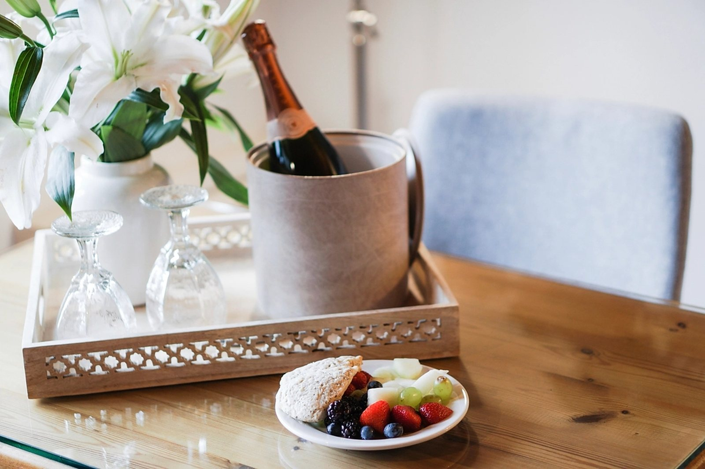
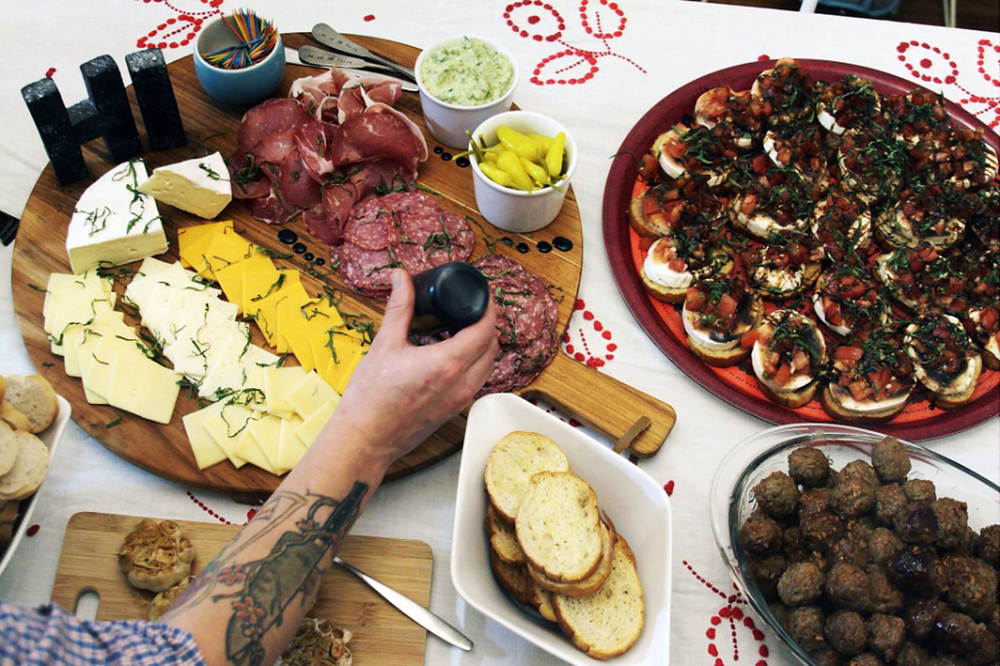
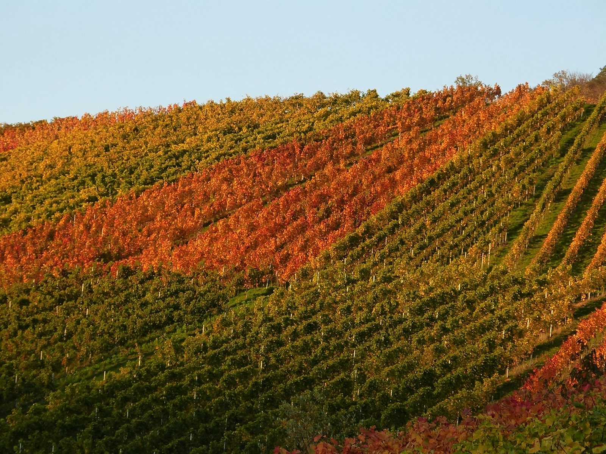
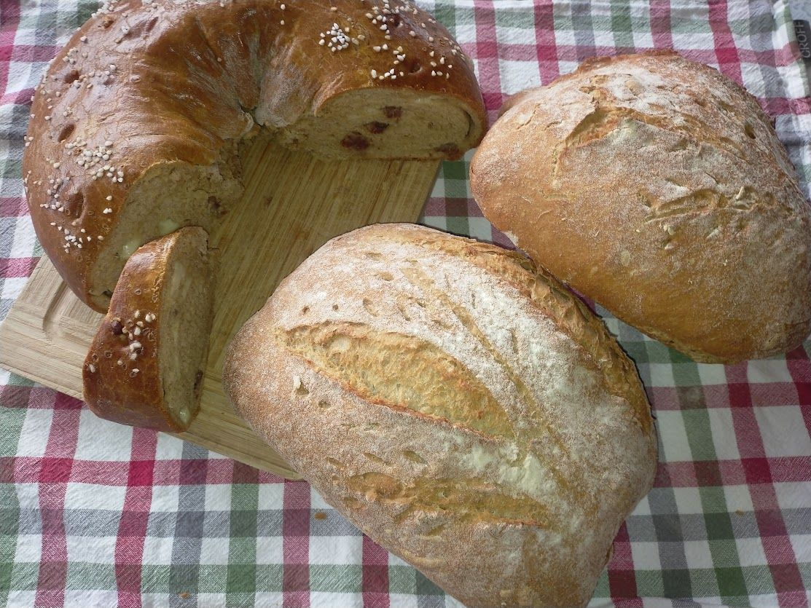

Esperienze
Ci sono vari modi in cui puoi venire a trovarci, passando per una degustazione veloce quando sei in zona visitando le nostre colline o prendendoti un momento di relax per godere i nostri vini e prodotti tipici oppure per un pranzo o cena, semplice ma autentica in buona compagnia!
Goditi tutto nella nostra sala con una splendida vista sul Quartiere del Piave e in un ambiente che speriamo troverai accogliente e di famiglia.
Degustazione Classico
Vieni a trovarci nella nostra sala di degustazione dove puoi assaggiare 3 calici dei nostri vini, tra cui 2 Conegliano Valdobbiadene Prosecco DOCG. Servito con un piatto di soppressa e cestino di pane, tutto di nostra produzione!

Degustazione Buon Gustaio
Sempre nella nostra sala di degustazione dove puoi assaggiare 3 calici dei nostri vini, tra cui 2 Conegliano Valdobbiadene Prosecco DOCG. I vini vengono serviti con un tagliere di affettati della nostra produzione, verdure in agrodolce, formaggi di piccole aziende locali con marmellata o miele e un cestino di pane fatto in casa con la nostra farina ‘Giorgione’!

Tour ‘dal Vigneto a Tavola’
Iniziamo nei nostri vigneti per farti scoprire da vicino il lavoro che svolgiamo nei nostri campi durante l'anno e la nostra filosofia. Il percorso prosegue con la vendemmia e la visita alla cantina con la spiegazione della vinificazione fino all'imbottigliamento. Concludiamo a tavola nella nostra sala di degustazione dove puoi assaggiare 4 calici dei nostri vini, serviti con tagliere di affettati di nostra produzione, formaggi locali e pane cotto nel forno a legna!

Vieni a trovarci
Se cerchi un posto accogliente per un pranzo o cena, ogni weekend apriamo su prenotazione il nostro agriturismo con menù spuntineria, dove puoi godere del massimo della nostra azienda: affettati di nostra produzione a km 0, formaggi di piccole aziende agricole locali con miele e marmellate, pane cotto nel nostro forno a legna con farina di grano antico ‘Giorgione’, verdure dell'orto in agrodolce e dolci fatti in casa.
Un calice di Casa Nova Brut, poi vino sfuso e acqua inclusi. I nostri spumanti e frizzanti possono essere degustati anche in calice o acquistati in bottiglia.
Per le tue occasioni più speciali, puoi concordare primi piatti di stagione e specialità di carne. Per vedere il nostro menù: clicca qui.
Contatti
Per prenotare la tua esperienza o per qualsiasi informazione, puoi chiamarci: